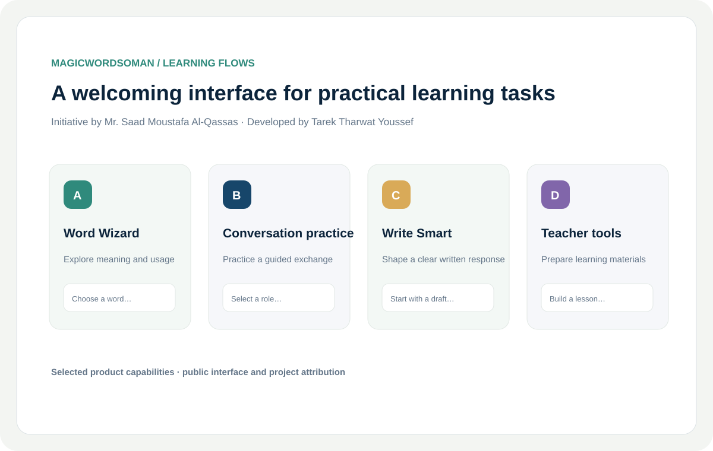

The challenge
Learners and educators benefit when useful practice and preparation tools are easy to find and begin using.
A browser-based learning experience organizes AI-assisted tasks into accessible student and teacher workflows.

Learners and educators benefit when useful practice and preparation tools are easy to find and begin using.
Developed the MagicWordsOman learning experience with flows for vocabulary, guided conversation, writing and teacher resources.
Organize distinct tasks into a simple web product while keeping the learning activity in focus.
An initiative by Mr. Saad Moustafa Al-Qassas; developed by Tarek Tharwat Youssef. Public product capabilities are summarized in a designed panel.
Makes AI-assisted learning activities easier to approach through a clear browser interface.